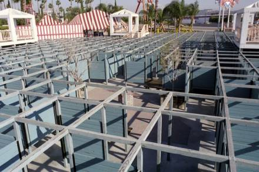
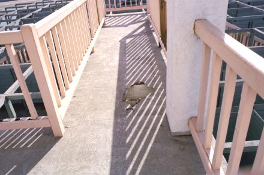
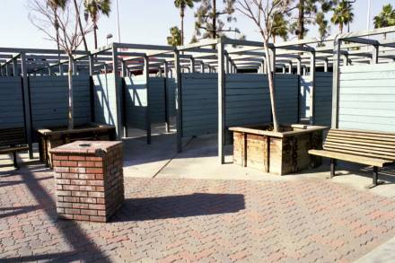

| For quite a few years I’ve known about the fence maze at the Family Fun Center in Anaheim, CA. I finally got a chance to check it out, and it turned out to be incredibly bad. |  | |
|
The layout of the maze was very poor (although it’s hard to explain what is a good maze design and what is a poor one). But in addition, the maze was falling apart, as is shown in this picture of one of the bridges. |  | |
|
However, one nice feature was this plaza inside the maze. Every maze should have one or more plazas inside. |  |